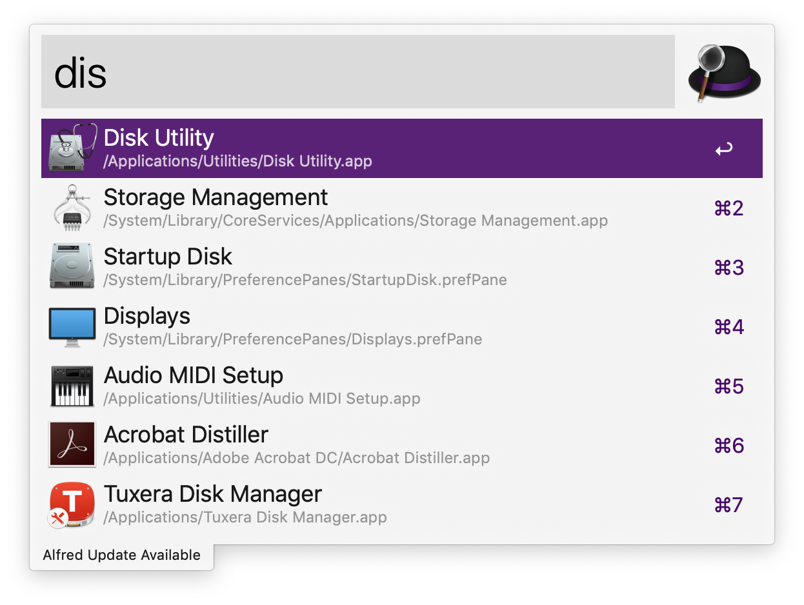
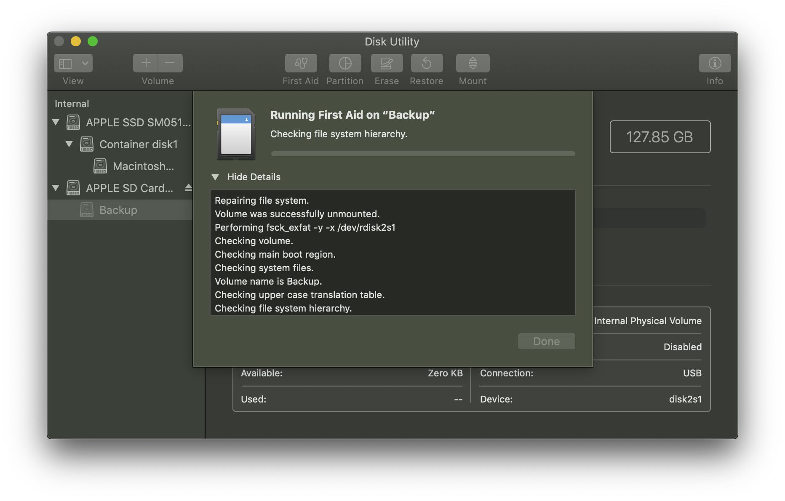
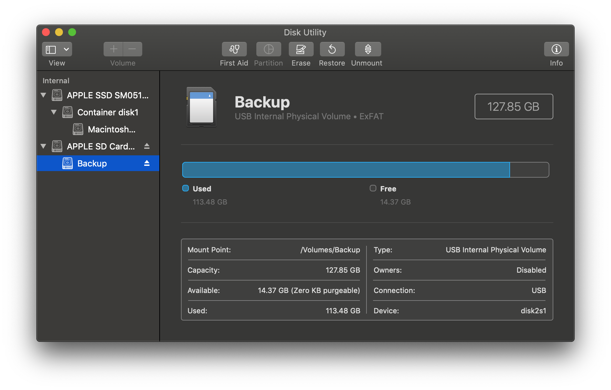

在升級 Mac OS 版本至 Mojave 版本後，原本的隨身記憶卡卻突然讀取不到了
Mojave
打開 Disk Utility 可以看到他狀態一直為 Unmount 狀態，就算點了上方的 Mount 按鈕也不理我
Disk Utility
Unmount
Mount

為了解決這個問題可以點選上方的 First Aid，之後就會開始檢測此裝置
First Aid

檢測完後，就可以正常的 mount 記憶卡了
